We want to analyze the performance of implementing some database operations on a GPU versus a CPU. Since each operation can be expensive based on the size of the database and the number of disk accesses the operation requires, we believe that we can significantly speed up each operation by changing how and where the database tuples are stored, and how we access the tuples. We have implemented the relational algebra operations SELECT and JOIN on GPU machines to simulate the relational database queries in order to investigate the viability of accelerating a database on GPU. For reference when analyzing the performances, we have implemented sequential versions of the operations on the multi-core CPU machines in the Gates clusters.
The database operations are usually regarded as slow because of their inevitable access to disk - this is where MemSQL comes in. MemSQL places data directly into a memory system and translates SQL statements into C++ for the utmost optimization in query execution, which enables MemSQL to write and read data at incredible speeds compared to reading and writing data from the disk. Although our initial approach was to use MemSQL, we decided against it so as to evaluate the performance fairly of GPU vs CPU.
However, the speedup can vary depending on the number of CPU cores provided to us. For certain types of queries, the tuples that are being accessed are highly independent of each other so they have high potential to benefit from parallelism. Specifically, we can implement each thread to work on each tuple simultaneously and the performance of computing a large volume of data would be largely promoted.
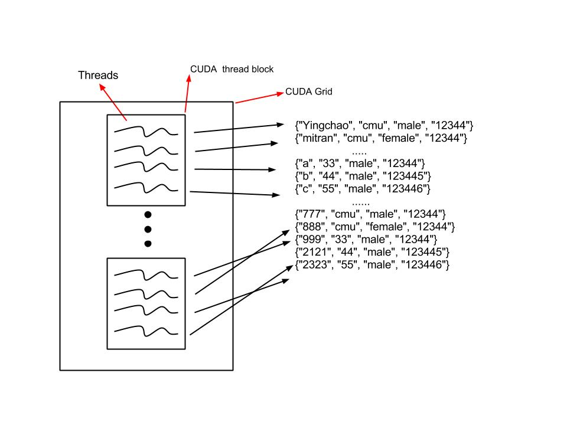
Our project is to enhance the performance even more. To do this, we implemented an in-memory database and an even faster way to ingest large volumes of data. In order to execute the queries on the GPU, we transfer the necessary tables to the GPU and use its high computation power to implement relational algebra.
Relational algebra is a procedural query language, which consists of a set of operations that take one or two relations as input and produce a new relation as their result. The fundamental operations are: select, project, union, and set difference. Operators in relational algebra are not necessarily the same as SQL operators, even if they have the same name. For example, the SELECT statement exists in SQL, and also exists in relational algebra. These two uses of SELECT are not the same. The DBMS must take whatever SQL statements the user types in and translate them into relational algebra operations before applying them to the database.
To implement SELECT and JOIN, we referred to several papers that have been written about translating SQL queries into relational algebra. We wanted to efficiently use the computation power and memory space of the GPU and CPU, respectively, so we enhacned the algorithms of each of the operations. Each operation is run on several threads on the GPU, so the algorithms require quick division and merging of the tables. Below are brief explanations of the algorithms that we implemented, mostly taken from information in the "Efficient Relational Algebra Algorithms and Data Structures for GPU" academic paper.
SELECT The GPU takes in the input table and divides the tuples among the available worker threads. Each thread then performs the "select" operation on each tuple and reports whether the tuple is a match for the query by storing a 1 in a match_index_array at the appropriate index. The GPU then counts the qualifying tuples under each thread and reports the "result size" for each thread. Next, the GPU performs a prefix sum of the result sizes and creates a histogram from which it maps the qualifying tuples to the output buffer. In addition to executing one query at a time on the GPU, we added an additional implementation of SELECT which supported streams of queries. Our hope was that this would help hide the overhead of computation and the bottleneck that arises from the GPU-startup and disk accesses. Below is an image depicting the SELECT algorithm from the GPU as taken from the paper specified above.
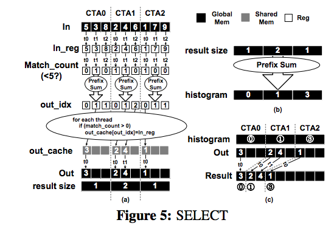
On the CPU, we implemeneted a simple serial version as well as an OpenMP version that uses SIMD instructions to improve performance. We felt that it was fair to compare a parallelized implementation on the CPU to a parallelized implementation on the GPU to accurately measure better performance of the operations. The CPU version uses all four cores on the machine by placing pertinent blocks of code in parallel for loops. Each thread checks tuples from the table to see if they are qualifying, and then follows a similar algorithm as in the GPU by performing a prefix sum on the matching indeces of the tuples. This allows for maximum parallelism on the CPU using OpenMP.
JOIN Join is implemented in a similar fashion to the SELECT operation on the GPU and the CPU. Since we are joining together tuples from two different tables, we initially sort both the tables to improve performance of the joins. We assign threads from the GPU to similar sized blocks from one table and perform a binary search algorithm on the second table to find tuples within the bounds of the block. Once the number of matching tuples is computed, we once again perform a prefix sum operation to find an upper bound for the total number of qualifying tuples from the query. We then merge each tuple with its respective matching tuples and perform another prefix sum on the actual number of qualifying tuples to create a histogram of the final result. Each thread then merges their final results into the final output buffer.
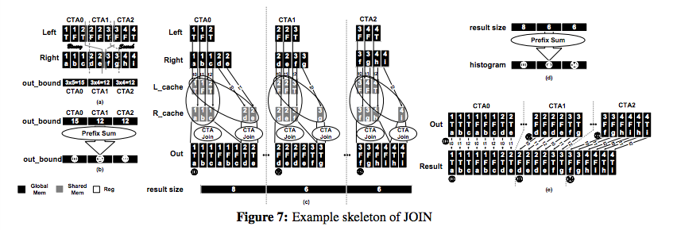
The JOIN operation is quite similar on the CPU, but instead of implementing a binary search for finding tuples within the bounds, we brute force the search for the tuples in the second table. The brute force algorithm has a better performance time than O(M) for every search, where M is the size of the second table, because we take advantage of the fact that the table is sorted. Then, we are able to directly merge the tuples into the output buffer rather than keeping track of the result sizes for each thread. However, when implementing JOIN on the CPU using OpenMP, we must utilize the threads for efficient parallelism. This algorithm is similar to the JOIN operation algorithm on the GPU, except for it once again uses a brute force search method rather than a binary search. The reason we chose two different search methods was that binary search has relatively good performance on the GPU as compared to all other search methods, whereas brute force proved to be the best for the CPU.
IN THE PROCESS
Here are the results from JOIN operation executed on CPU and GPU. We executed JOIN on the GPU with CUDA, on the GPU using CUDA kernels, and on the CPU using a single thread. We display the speed for the queries on different sizes of tables.
All Results:
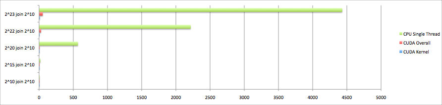
GPU with CUDA:
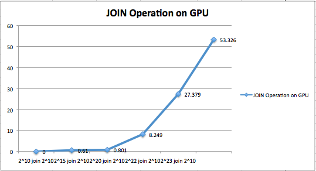
GPU with CUDA Kernels:
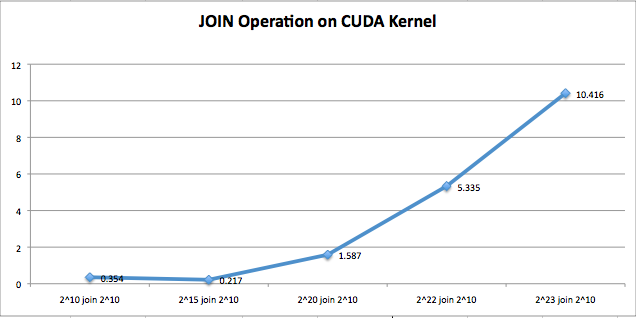
CPU with Single Thread:
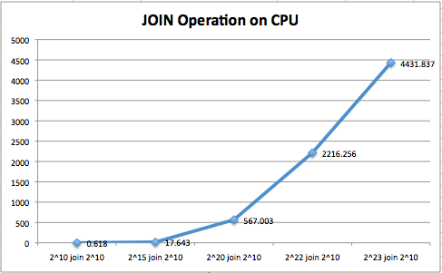
Here are the results from SELECT operation executed on CPU and GPU. We executed SELECT on the GPU with CUDA, on the GPU using CUDA kernels, on the GPU using streams, on the CPU using a single thread, and on the CPU implementing SIMD and tasks. We display the speed for the queries on different query sizes.
All Results:
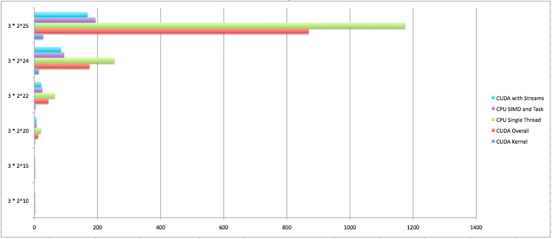
GPU with CUDA:
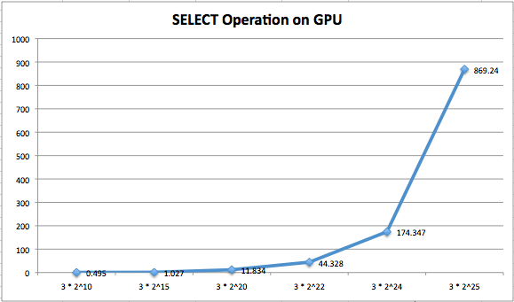
GPU with CUDA Kernels:
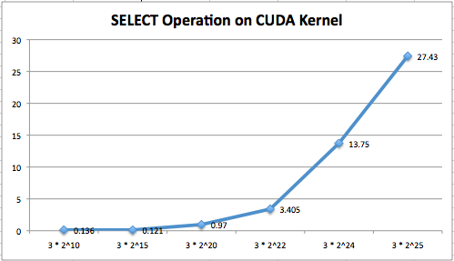
GPU with Streams:
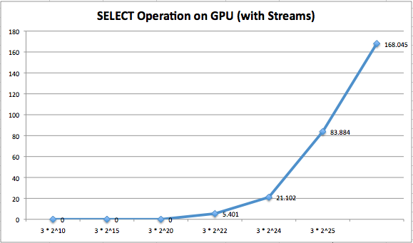
CPU with Single Thread:
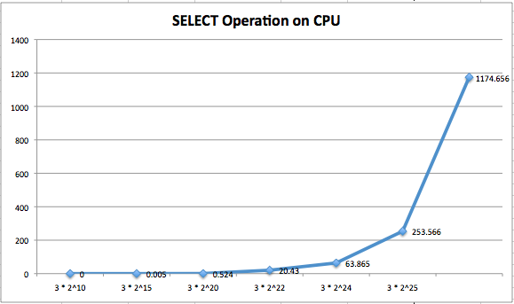
CPU with SIMD and Tasks:
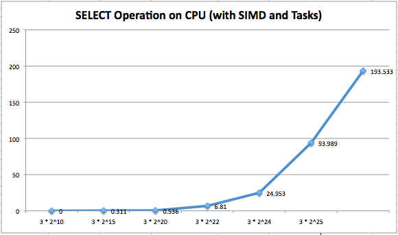
IN THE PROCESS